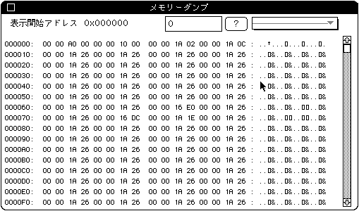

★SOUND Manual
★サウンドシュミレータマニュアル
★SOUND Manual
★サウンドシュミレータマニュアル
▲
戻る｜
進む▼
サウンドシュミレータマニュアル
メモリーダンプ

- ターゲット上のサウンドメモリーを２５６バイト分ダンプします。このメニューを選択すると以下のダイアログが表示されます。(ダンプのPICTを挿入してください)
エディットテキスト
- 表示アドレスを指定します。指定した後は隣の［？］ボタンを押してください。
- ポップアップメニュー
- 常用するアドレスを登録しておくことができます。ポップアップのメンバーは以下の通りです。
(ポップアップダンプのPICTを挿入してください)
- 表示開始アドレス
- このメニューは常用するアドレスを登録するダイアログを表示します。
(アドレス設定PICTを挿入してください)
- 各機能は以下の通りです。
- ポップアップメニュー
- 登録するテーブル番号を指定します。すでに設定されているテーブルには設定値とテーブル名(Symbol name)が表示されます。登録できるアドレスの最大数は15個です。
- スクロールバー
- 0x20バイトごとに0x100E30まで表示が可能になっています。
- クローズボックス
- このダイアログを消すには左上のクローズボックスを押してください。
▲
戻る｜
進む▼
★SOUND Manual
★サウンドシュミレータマニュアル
Copyright SEGA ENTERPRISES, LTD., 1997